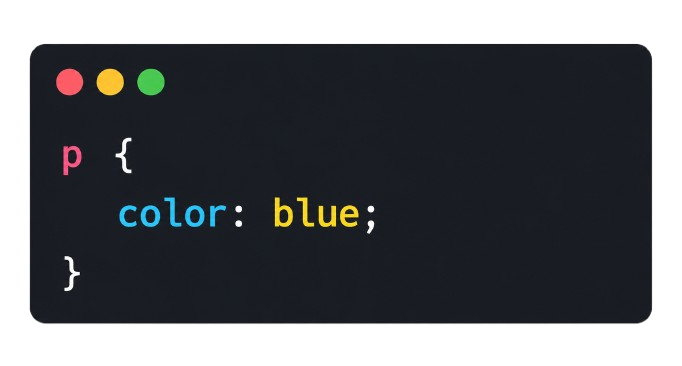
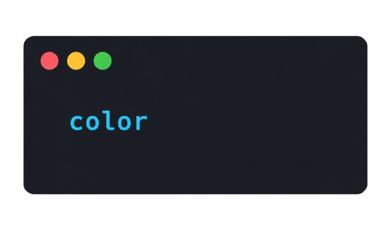
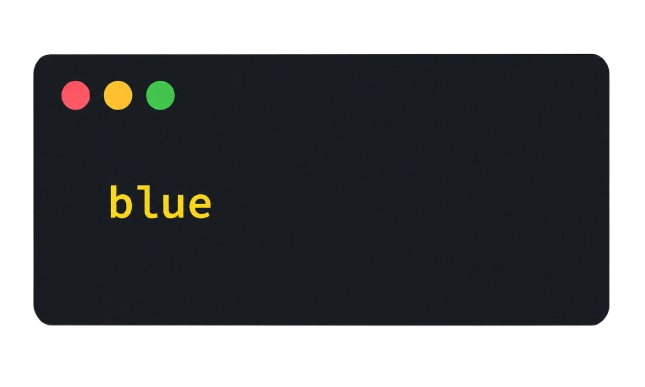
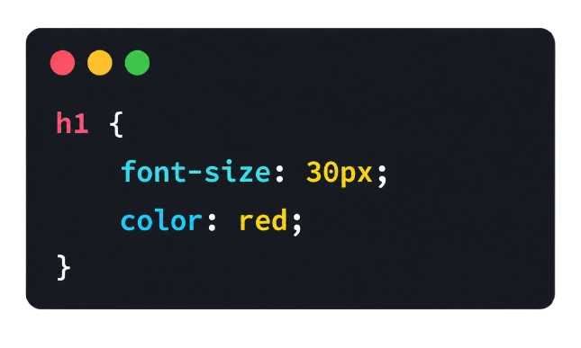

CSS |
||||||||||||||||||||||||||||||||||||||||||||
|---|---|---|---|---|---|---|---|---|---|---|---|---|---|---|---|---|---|---|---|---|---|---|---|---|---|---|---|---|---|---|---|---|---|---|---|---|---|---|---|---|---|---|---|---|
Oque é o CSS? |
||||||||||||||||||||||||||||||||||||||||||||
CSS (Cascading Style Sheets) é uma linguagem usada para estilizar páginas web e melhorar a aparência visual dos sites. Ele trabalha junto com o HTML: enquanto o HTML define a estrutura da página, como títulos, parágrafos, imagens e botões, o CSS é responsável pela parte visual, como cores, tamanhos, fontes, espaçamentos, alinhamentos e organização do layout.Com o CSS, é possível deixar um site mais bonito, organizado e agradável para o usuário. Além disso, ele permite criar animações, efeitos visuais e páginas responsivas, que se adaptam a diferentes tamanhos de tela, como celulares, tablets e computadores. Dessa forma, o CSS é essencial no desenvolvimento web moderno, pois ajuda a transformar páginas simples em interfaces mais profissionais e atrativas. |
||||||||||||||||||||||||||||||||||||||||||||
Porque ele foi criado? |
||||||||||||||||||||||||||||||||||||||||||||
O CSS foi criado para separar o conteúdo visual da estrutura das páginas web. Antes dele, o HTML era usado tanto para organizar o conteúdo quanto para definir a aparência do site, o que deixava o código confuso, repetitivo e difícil de manter.Com a criação do CSS, tornou-se possível controlar cores, fontes, tamanhos, espaçamentos e layouts em um arquivo separado do HTML. Isso facilitou o desenvolvimento de sites, deixando as páginas mais organizadas, rápidas e fáceis de editar.Além disso, o CSS permitiu criar páginas mais bonitas, responsivas e padronizadas, melhorando a experiência dos usuários em computadores, celulares e outros dispositivos. Hoje, ele é uma das principais tecnologias do desenvolvimento web, trabalhando junto com HTML e JavaScript. |
||||||||||||||||||||||||||||||||||||||||||||
Exemplos do CSS |
||||||||||||||||||||||||||||||||||||||||||||
Seletores: Os seletores indicam qual elemento do HTML será estilizado. Exemplo: Nesse caso, o seletor é p, que representa os parágrafos da página. Exemplo:Propriedades: As propriedades definem o que será alterado no elemento. No exemplo acima a propriedade é: Ela serve para mudar a cor do texto.Valores: Os valores definem como a propriedade será aplicada. Exemplo: No exemplo acima, é o valor da propriedade color. |
||||||||||||||||||||||||||||||||||||||||||||
Estrutura básica do CSS |
||||||||||||||||||||||||||||||||||||||||||||
|
 h1 = Seletorfont-size e color = Propriedades30px e red = Valores
|
||||||||||||||||||||||||||||||||||||||||||||
Resumo Final |
||||||||||||||||||||||||||||||||||||||||||||
CSS (Cascading Style Sheets) é uma linguagem usada para estilizar páginas web, trabalhando junto com o HTML. Enquanto o HTML organiza a estrutura da página, o CSS define a aparência visual, como cores, fontes, tamanhos, espaçamentos e layouts.No CSS, existem três partes principais: os seletores, que escolhem o elemento que será estilizado; as propriedades, que definem o que será alterado; e os valores, que indicam como essa alteração será aplicada. A estrutura básica do CSS é formada por:Além de deixar os sites mais bonitos e organizados, o CSS também permite criar animações, efeitos visuais e páginas responsivas, adaptadas para celulares, tablets e computadores. Por isso, ele é uma das principais tecnologias do desenvolvimento web moderno. |